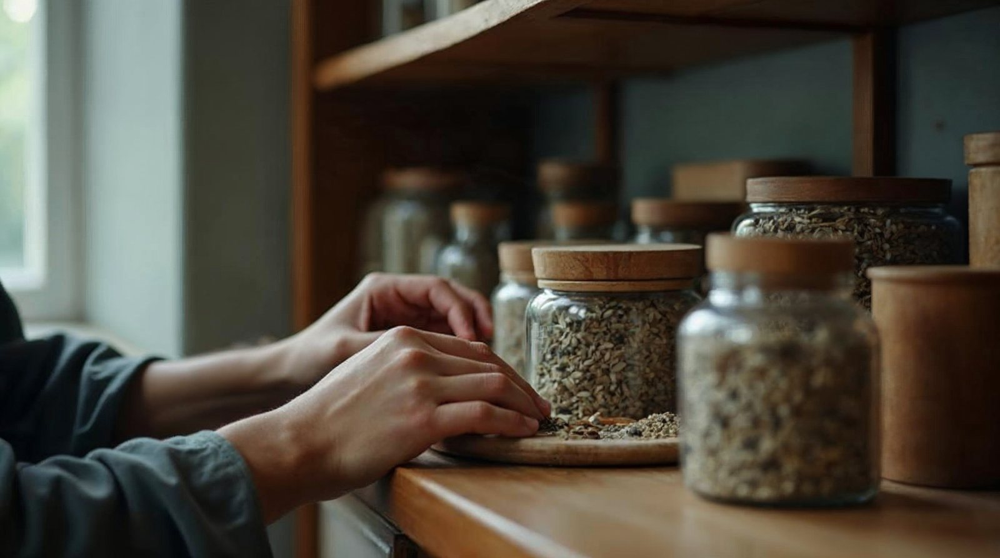
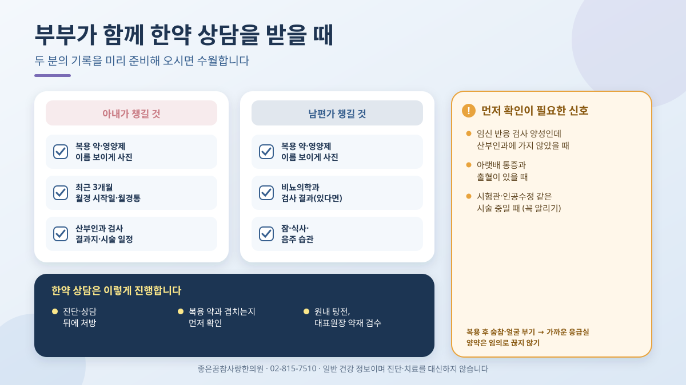

이종호 한의사 감수좋은꿈참사랑한의원 대표원장 (한의사 면허번호 19769)발행 2026-11-24 · 수정 2026-11-25
이 글의 차례
두 분의 복용 약과 영양제, 검사 결과, 월경 기록을 미리 준비해 오시면 부부 한약 상담이 한결 수월합니다. 좋은꿈참사랑한의원에서는 한 분만이 아니라 두 분의 생활 리듬과 몸 상태를 함께 여쭙고, 이미 받고 계신 산부인과 진료와 겹치지 않도록 확인합니다. 임신 준비 중 한약이 필요한지는 진찰과 상담에서 산부인과 진료 내용과 함께 놓고 확인합니다.
임신 반응 검사에서 양성이 나왔다면 한약 상담보다 산부인과 진료가 먼저입니다.
왜 두 분의 기록이 함께 필요할까요
- 임신 준비에는 두 분 모두의 잠, 식사, 피로 같은 생활 리듬이 함께 관련됩니다.
- 월경 주기와 월경통의 변화는 생활 리듬과 함께 흔들리는 경우가 있어 기록이 중요합니다.
- 복용 중인 약이나 영양제가 많으면 한약과 겹치는 성분이 있는지 확인이 필요합니다.
- 난임 시술을 받고 있다면 그 일정과 약에 맞춰 상담 내용이 달라질 수 있습니다.
먼저 이렇게 여쭙니다
- 두 분이 각각 복용 중인 약과 영양제(엽산 등)는 무엇인가요?
- 산부인과나 비뇨의학과에서 받은 검사나 진료가 있나요?
- 최근 몇 달의 월경 주기와 월경량은 어떤가요?
- 두 분의 잠, 식사, 음주 습관은 어떤가요?
- 임신을 준비한 지 얼마나 되었고, 지금까지 어떤 진료를 받아 오셨나요?
일상에서 먼저 해 볼 수 있는 것
- 복용 중인 약과 영양제는 이름이 보이게 사진을 찍어 오기
- 최근 3개월 월경 시작일을 달력에 적어 오기
- 산부인과 검사 결과지가 있다면 함께 가져오기
- 궁금한 점은 미리 메모해 두 분이 함께 확인하기
상황별 예시
- 예를 들어 맞벌이로 두 분 모두 야근이 잦아 평일에 함께 오기 어려운 경우에는 토·일·공휴일 진료 시간(09:30~15:00)에 함께 오시거나, 한 분씩 따로 상담을 받은 뒤 기록을 이어서 보는 방법도 있습니다.
- 예를 들어 산부인과에서 배란 일정을 보며 진료를 받고 있는 경우에는 그 일정표와 처방받은 약을 가져오시면, 한약 상담이 그 일정과 겹치지 않는지 먼저 확인합니다.
- 예를 들어 한 분은 몸이 차고 월경통이 있고, 다른 한 분은 잦은 회식과 잠 부족으로 피로가 쌓인 경우처럼 두 분의 상태가 다르면, 생활에서 함께 바꿀 것과 각자 살필 것을 나누어 정리합니다.
스스로 점검해 보세요
상담 전에 아래 항목을 두 분이 함께 확인해 보세요.
- 두 분 각각 복용 중인 약과 영양제 이름을 알고 있다
- 최근 3개월 월경 시작일을 적어 두었다
- 산부인과·비뇨의학과 검사 결과지를 챙겼다
- 시술이나 배란 관련 일정이 있다면 날짜를 정리했다
- 두 분의 평소 잠드는 시각과 일어나는 시각을 적었다
- 일주일 음주 횟수와 흡연 여부를 서로 확인했다
- 상담에서 묻고 싶은 질문을 메모해 두었다
빠진 항목이 있어도 상담은 받으실 수 있으니, 준비된 만큼 가져오시면 됩니다.

한의원에서 함께 살필 수 있는 경우
- 몸이 차고 월경통이나 주기 변화가 있는 경우 월경 기록과 생활 리듬을 함께 살핍니다.
- 피로와 잠 부족이 겹친 경우 두 분 각자의 잠과 식사를 함께 살핍니다.
- 한약을 고려하는 경우 진단과 상담을 거친 뒤 복용 중인 약과 겹치는지 확인하고 처방 여부를 정합니다.
좋은꿈참사랑한의원에서는 첫 방문에 두 분의 이야기를 각각 듣고, 맥을 짚고 혀와 배를 살핀 뒤 가져오신 검사 결과와 복용 약을 함께 확인합니다. 산부인과·비뇨의학과 검사를 아직 받지 않으셨다면 함께 받아 보시도록 안내하고, 생활에서 바꿀 것과 한약이 필요한지를 함께 정합니다.
한약은 진단과 상담을 거친 뒤에 처방하며, 복용 중인 약과 겹치는지 먼저 확인합니다. 처방하는 경우 원내에서 탕전하고 대표원장이 약재를 검수하며, 복용 방법과 보관 방법, 복용 중 지켜볼 점을 함께 안내해 드립니다. 다음에 오시면 그사이 월경 기록과 잠, 복용 중 달라진 점을 이어서 여쭙습니다.
얼마나 지켜보고 언제 상담할까요
- 상담을 받기 전이라면 최근 월경 시작일과 두 분의 잠·음주를 적어 보는 것부터 시작하세요. 기록이 2~3개월 쌓이면 흐름이 보이기 쉽습니다.
- 월경 주기가 크게 흔들리거나 월경통이 점점 심해진다면 기록이 쌓이기를 기다리지 말고 산부인과 진료를 먼저 받으시기를 권합니다.
- 한약 상담은 산부인과·비뇨의학과 진료와 함께 가는 것을 권하며, 시술 일정이 잡혀 있다면 상담 전에 알려 주세요.
- 임신 반응 검사에서 양성이 나왔다면 한약 상담보다 산부인과 진료가 먼저입니다.
이렇게 기록해 오시면 상담이 쉬워집니다
- 두 분 각각의 복용 약과 영양제(이름이 보이게 사진)
- 최근 3개월 월경 시작일과 월경량, 월경통
- 산부인과·비뇨의학과 검사 결과지와 시술 일정(있다면)
- 두 분의 잠·식사·음주 습관
이런 증상은 먼저 확인이 필요합니다
- 임신 반응 검사에서 양성이 나왔는데 아직 산부인과에 가지 않은 경우
- 아랫배 통증과 함께 출혈이 있는 경우
이런 신호가 있으면 한의원보다 가까운 병원이나 응급실을 먼저 찾으세요.
관련 글
- 임신을 준비하는 부부가 둘 다 야근이 잦을 때 생활 리듬은 어떻게 맞추나요?
- 한약 상담을 받을 때 무엇을 알려 주면 좋을까요?
- 원내 탕전은 무엇이고 한약은 어떤 과정으로 만들어지나요?

여쭙는 것
- 두 분이 각각 복용 중인 약과 영양제(엽산 등)는 무엇인가요?
- 산부인과나 비뇨의학과에서 받은 검사나 진료가 있나요?
- 최근 몇 달의 월경 주기와 월경량은 어떤가요?
생활에서 해 볼 것
- 복용 중인 약과 영양제는 이름이 보이게 사진을 찍어 오기
- 최근 3개월 월경 시작일을 달력에 적어 오기
- 산부인과 검사 결과지가 있다면 함께 가져오기
한의원에서 함께 살필 것
- 몸이 차고 월경통이나 주기 변화가 있는 경우 월경 기록과 생활 리듬을 함께 살핍니다.
- 피로와 잠 부족이 겹친 경우 두 분 각자의 잠과 식사를 함께 살핍니다.
- 한약을 고려하는 경우 진단과 상담을 거친 뒤 복용 중인 약과 겹치는지 확인하고 처방…
먼저 확인이 필요한 신호
- 임신 반응 검사에서 양성이 나왔는데 아직 산부인과에 가지 않은 경우
- 아랫배 통증과 함께 출혈이 있는 경우
한눈에 보는 표
| 구분 | 핵심 |
|---|---|
| 여쭙는 것 | 두 분이 각각 복용 중인 약과 영양제(엽산 등)는 무엇인가요? 산부인과나 비뇨의학과에서 받은 검사나 진료가 있나요? |
| 생활에서 해 볼 것 | 복용 중인 약과 영양제는 이름이 보이게 사진을 찍어 오기 최근 3개월 월경 시작일을 달력에 적어 오기 |
| 한의원에서 함께 살필 것 | 몸이 차고 월경통이나 주기 변화가 있는 경우 월경 기록과 생활 리듬을 함께 살핍니다. 피로와 잠 부족이 겹친 경우 두 분 각자의 잠과 식사를 함께 살핍니다. |
| 먼저 확인이 필요한 신호 | 임신 반응 검사에서 양성이 나왔는데 아직 산부인과에 가지 않은 경우 아랫배 통증과 함께 출혈이 있는 경우 |
자주 묻는 질문
임신이 되면 한약은 바로 멈춰야 하나요?
임신을 확인하셨다면 복용을 멈추고 바로 한의원에 알려 주세요. 임신 중 복용 여부는 산부인과 진료와 함께 따로 판단합니다.
엽산은 계속 먹어도 되나요?
드시는 영양제는 상담 때 알려 주시면 한약과 겹치는 부분이 있는지 함께 확인합니다. 엽산 복용은 산부인과 안내를 따르시면 됩니다.
한약은 한 사람만 먹어도 되나요?
두 분의 상태가 다를 수 있어 각자 진찰과 상담을 거친 뒤 필요한지를 따로 정합니다. 한 분만 상담을 받으셔도 됩니다.
시험관 시술을 준비하는 중에도 한약 상담을 받을 수 있나요?
상담은 받으실 수 있지만, 시술 일정과 처방받은 약에 따라 한약 복용 여부가 달라질 수 있습니다. 시술을 진행하는 병원의 안내를 함께 확인하며 상담에서 정하고, 일정이 바뀌면 바로 알려 주세요.
영양제를 여러 가지 먹고 있는데 통을 다 가져가야 하나요?
통을 모두 가져오지 않으셔도 됩니다. 제품 이름과 성분표가 보이게 사진을 찍어 오시면 한약과 겹치는 부분이 있는지 함께 확인합니다.
진료 시간은 어떻게 되나요?
좋은꿈참사랑한의원은 평일 09:30~20:00(점심 13:00~14:00), 토·일·공휴일 09:30~15:00에 진료합니다.
좋은꿈참사랑한의원은 재진 때 지난번 이야기부터 이어서 여쭙니다. 진료시간과 예약은 오시는 길에서 확인하세요.
어디서 상담받을 수 있나요?
좋은꿈참사랑한의원은 서울 동작구 만양로2길 2 신성빌딩 3층·5층(서울 동작구 상도동, 7호선 상도역 3번 출구 근처)에 있습니다. 한의사 3명(이종호 대표원장, 조영기 수석진료원장, 정원영 진료원장)이 진료합니다. 진료시간은 평일 09:30~20:00(점심 13:00~14:00), 토·일·공휴일 09:30~15:00이며, 방문 전 전화로 확인을 권합니다. 예약은 네이버 예약, 카카오톡 상담, 전화 02-815-7510로 받습니다.
이 글은 일반적인 건강 정보이며 개인의 진단이나 치료를 대신하지 않습니다. 증상이 있거나 복용 중인 약이 있다면 진료를 통해 확인하세요. 치료 효과는 개인마다 다를 수 있습니다.
작성 기준: 일반적으로 알려져 있는 건강 정보를 참고해 정리했습니다(대표원장 감수). 증상 기록은 1~2주 동안 하루 1회, 비슷한 시간에 적어 오시면 지난 상태와 비교하기 쉽습니다.